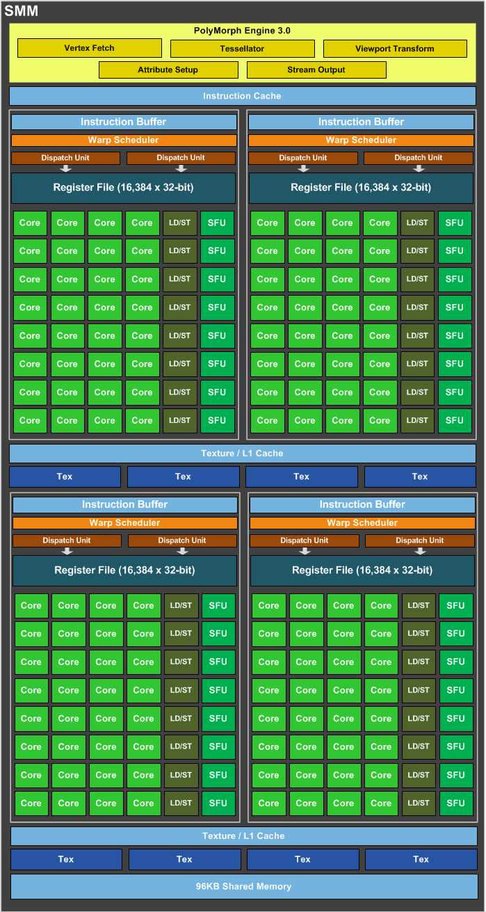
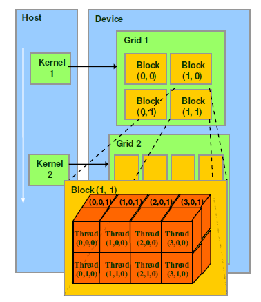

了解GPU的硬件架构，才能更好的发挥GPU的最佳性能，本文从sp，sm，thread，block，grid，warp对NVIDIA GPU的硬件架构进行探讨，以加深对NVIDIA GPU硬件架构的了解。首先我们要明确：SP（streaming Process）, SM（streaming multiprocessor）是硬件概念。而thread，block, grid, warp是软件上（CUDA）的概念。
从硬件看
- SP: 最基本的处理单元，streaming processor, 即 CUDA core。最后具体指令是在SP上处理的。GPU进行并行计算，也就是多个SP同时处理。
- SM：多个SP加上其他的一些资源组成一个streaming multiprocessor，即GPU大核。其他资源如：warp scheduler, register, shared memory等。SM可以看做GPU的心脏（对比CPU核心），register和shared memory是SM的稀缺资源。CUDA将这些资源分配给所有驻留在SM中的threads。因此，这些有限的资源就使每个SM中active warps有非常严格的限制，也就限制了并行能力。每个SM包含的SP数量依据GPU架构而不同，相同架构的GPU包含的SM数量则根据GPU的中高低端来定。
下图给出一个SM的示意图，图中每个绿色框表示一个SP（等同于CPU的ALU），下图仅表示一个SM，一个GPU可以有多个SM，最终一个GPU就可能含有上千个SP。这么多核心“同时运行”。速度可想而知，这个引号只是想表明实际上，软件逻辑上所有SP是并行的，但是物理上并不是所有SP都能同时执行计算，因为有些会处于挂起状态，就绪等待其他状态，这有关GPU的线程调度。

从软件看
thread, block, grid, warp 是CUDA编程上的概念，以方便程序员软件设计，组织线程，如下图所示：

- thread: 一个CUDA的并行程序会被许多个threads来执行。
- block: 数个threads会被群组成一个block，同一个block中的threads可以同步，也可以通过shared memory通信。
- grid: 多个nlocks则会再构成grid。
- warp: GPU执行程序时的调度单位，目前cuda的warp大小为32，同在一个warp的线程，以不同数据资源执行相同的指令，这就是所谓SIMT。
对应关系
从软件上看，SM更像是一个独立的CPU core， SP则类似于CPU中的ALU，SM是GPU架构中非常重要的部分，GPU硬件的并行性就是又SM决定的。
GPU中每个SM都设计成支持数以百计的线程并行执行，并且每个GPU都包含了很多的SM，所以GPU支持成百上千的线程并行执行。当一个kernel启动后，threads会被分配到这些SM中执行。大量的thread可能会被分配到不同的SM，同一个block中的threads必然在同一个SM中并行执行（SIMT）。每个thread拥有它自己的程序计数器和状态寄存器，并且用该线程自己的数据执行指令，这就是所谓的Single Instruction Multiple Thread。
一个SP可以执行一个thread，但是实际上并不是所有的thread能够在同一时刻执行。NVIDIA把32个threads组成一个warp，warp是调度和运行的基本单元。warp中所有threads并行的执行相同的指令。一个warp需要占用一个SM运行，多个warps需要轮流进入SM。由SM的硬件warp scheduler负责调度。目前每个warp包含32个threads，所以，一个GPU上的resident thread最多只有SM*warp个。
SIMT和SIMD
CUDA是一种典型的SIMT架构（单指令多线程架构），SIMT和SIMD（单指令多数据架构）类似，SIMT应该是SIMD的升级版，更灵活，但效率略低，SIMT是NVIDIA提出的GPU新概念。二者都通过将同样的指令广播给多个执行单元来实现执行。一个主要的区别是，SIMD要求所有的vector element在一个统一的同步组里同步的执行，而SIMT允许线程们在一个warp中独立的执行。SIMT有三个SIMD没有的主要特征：
- 每个thread拥有自己的instruction address counter
- 每个thread拥有自己的状态寄存器
- 每个thread可以有自己独立的执行路径
GPU运算速度和CUDA核心数量的关系
CUDA核心即SP，是主要的运算单元，内部有分别处理int和单精度float的部分，用于执行一些常用的运算指令。除了SP之外还有双精度单元用于科学计算以及特殊运算单元SFU。而gpu中除了这些运算单元之外还有很重要很稀缺的储存器结构。现代计算机，无论CPU还是GPU，主要的性能瓶颈都来自储存器。gpu运算单元的总峰值吞吐能力远远超过访存的峰值带宽。
nvidia一直在努力把自己的gpu从一般的图形处理器往通用计算的方向发展，cuda core里面的cuda这个词就是nvidia主推的并行计算架构。无论是图形渲染还是cuda编程，最基本的程序并行结构称为thread，这是程序员可以控制的最细粒度的并行单位。每一个thread在运算单元上就对应一个sp，所以新闻里常常会笼统的把sp数量等同于thread的并行数量，从而量化不同GPU的性能。多个thread组合起来称为一个block，数量是程序员可以设定的。在同一个block内的thread之间可以相互通信，因为他们可以共用同一个SM内的shared memory（共享储内存），每一个thread还拥有各自独占的register（寄存器）和local memory（本地储存器），这几种储存器都是整个GPU中距离运算单元距离最近，速度最快的储存器资源。但是跨block的线程通信不能通过SM内部的储存器，只能通过距离很远，访问时间长达几百个周期的global memory（全局内存，就是指显存）来实现，这个速度实在太慢了，所以cuda程序会尽量避免使用global memory。
打个比方，一个SM内部有48kb的shared memory，8192个register，假如程序员设定的每个block里面有64个线程，并且希望每个sm能同时驻留2个block，那么每个线程就能分到8192/2/64=64个register，一个block可以分配到48/2=24kb的shared memory，接着这位程序员又修改了程序，使得每个thread使用到的资源更多，并且恰好比之前算出来的极限值多那么一点点，就会导致一个SM满足不了驻留2个block，只能留下来一个，于是就会空置很多硬件资源不能得到有效的利用。总结一下，如果一个SM内的硬件资源比例不均，不能满足程序员的分配需求，那么就会导致同时执行的block数量变少。也就是说，即使一个gpu内部有很多很多的运算单元，却没有足够的其他资源支撑这些运算单元同时并行，那么这些运算单元就会闲置，白白浪费了算力。
“最新的 Pascal虽然每个 SM 的 sp 数量相对于前代 Maxwell而言只有一半（64/128），但是拥有相同的储存器资源，所以能提供给每个 block/thread 更多的储存器资源，从而保证每个运算单元的充分利用。再加上全局上的 GPU 运行频率比原来更高，即使总运算单元数量减少一点，最终折算的吞吐能力也会比上一代更高。”
参考文献
- https://www.jianshu.com/p/87cf95b1faa0
- https://blog.csdn.net/junparadox/article/details/50540602
- https://www.zhihu.com/question/46400432
- cnblogs.com/timlly/p/11471507.html